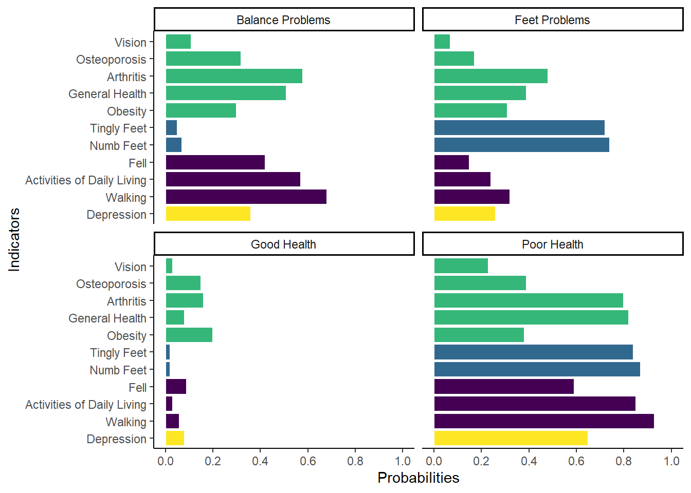

Code
# install.packages("metafor")
library(metafor)
library(tidyverse)
library(here)
spr_d <- read_csv(here("projects/spr_cup_lca/data", "sprcupdata.csv")) |>
janitor::clean_names()# install.packages("metafor")
library(metafor)
library(tidyverse)
library(here)
spr_d <- read_csv(here("projects/spr_cup_lca/data", "sprcupdata.csv")) |>
janitor::clean_names()The following visuals are from my Society of Prevention Research (SPR) team’s runner-up presentation for the Sloboda and Bukoski SPR Cup. The data provided to us was medicare data for an older sample. Our presentation was to examine if there were groups from the dichotomous health indicators (variables). We then wanted to examine if the groups we found were likely to have experienced a fall during the time of the data.
spr <- spr_d |>
mutate(
class_num = case_when(
class == 1 ~ "Poor Health",
class == 2 ~ "Feet Problems",
class == 3 ~ "Good Health",
class == 4 ~ "Balance Problems"
),
ind_group = case_when(
ind == "depression" ~ "Mental Health",
ind == "walking" ~ "Daily Functions",
ind == "adl" ~ "Daily Functions",
ind == "fell" ~ "Daily Functions",
ind == "numbfeet" ~ "Feet Issues",
ind == "tinglyfeet" ~ "Feet Issues",
ind == "obesity" ~ "Health Issues",
ind == "generalhealth" ~ "Health Issues",
ind == "arthritis" ~ "Health Issues",
ind == "osteoporosis" ~ "Health Issues",
ind == "vision" ~ "Health Issues"
),
ind = case_when(
ind == "depression" ~ "Depression",
ind == "walking" ~ "Walking",
ind == "adl" ~ "Activities of Daily Living",
ind == "fell" ~ "Fell",
ind == "numbfeet" ~ "Numb Feet",
ind == "tinglyfeet" ~ "Tingly Feet",
ind == "obesity" ~ "Obesity",
ind == "generalhealth" ~ "General Health",
ind == "arthritis" ~ "Arthritis",
ind == "osteoporosis" ~ "Osteoporosis",
ind == "vision" ~ "Vision"
)
)
spr <- spr |>
mutate(
ind = as.factor(ind),
ind = fct_relevel(
ind,
c(
"Depression",
"Walking",
"Activities of Daily Living",
"Fell",
"Numb Feet",
"Tingly Feet",
"Obesity",
"General Health",
"Arthritis",
"Osteoporosis",
"Vision"
)
)
)This visual accompanies a Latent Class Analysis (LCA) including various health-related indicators to see if there were latent (hidden) classes/groups among medicare recipients. A LCA uses categorical, mostly dichotomous variables, as indicators to measure membership in these classes, which are often parsed out by examining the probabilities of indicators and domain knowledge for naming the classes. In the analysis below, the following names were chosen: “Balance Problems”, “Feet Problems”, “Good Health”, and “Poor Health”. These names were chosen based on the probabilities for each indicator. Colors used were to show the indicators that were similar to one another when introducing them into the analysis. The “Tingly Feet” and “Numb Feet” were indicators that had to do with a person’s feet, while we also included physical health indicators, mental health indicators, and day-to-day activities. The probability of each indicator is then used to see if it would be included in creating the class name. For instance, the “Good Health” class shows that people in this class had low likelihoods of having feet problems, day-to-day problems, and good mental and physical health.
spr |>
ggplot(
aes(
ind,
prob
)
) +
geom_col(
aes(
fill = as.factor(ind_group)
),
color = "white"
) +
coord_flip() +
facet_wrap(
~class_num
) +
scale_y_continuous(
limits = c(
0,
1
),
breaks = seq(0, 1, .2)
) +
theme_classic() +
labs(
x = "Indicators",
y = "Probabilities"
) +
# scale_fill_manual(values = c("#036936", "#FCB116", "#AF272F", "#DB1593")) +
viridis::scale_fill_viridis(
discrete = TRUE
) +
theme(
legend.position = "None"
) +
NULL
While there are other reasons for choosing a model, including model parsimony, we chose a model based on scree plots for our three model fit indices. We ended up choosing the 4-class model based on using these fit indices and the elbow method, a method that assists in choosing a model based on when the fit indices go from bending at an extreme angle to a flattened angle.
fit <- data.frame("class_num" = c(1:10),
"AIC" = c(2066815.656, 1824708.7, 1797171.68, 1778126.43, 1773890.7,
1770324.82, 1769167.77, 1767884.82, 1766993.04, 1766190.26),
"BIC" = c(2066927.273, 1824942.08, 1797526.82, 1778603.34, 1774489.37,
1771045.25, 1770009.97, 1768848.79, 1768078.77, 1767397.75),
"Adjusted BIC" = c(2066892.315, 1824868.99, 1797415.59, 1778453.97, 1774301.87,
1770819.61, 1769746.19, 1768546.87, 1767738.72, 1767019.57))
tidy_fit <- fit |>
pivot_longer(
cols = -class_num,
names_to = "fit_indice",
values_to = "values"
)
tidy_fit <- tidy_fit |>
mutate(class_cat = case_when(
class_num == 1 ~ "1 class",
class_num == 1 ~ "2 class",
class_num == 1 ~ "3 class",
class_num == 1 ~ "4 class",
class_num == 1 ~ "5 class",
class_num == 1 ~ "6 class",
class_num == 1 ~ "7 class",
class_num == 1 ~ "8 class",
class_num == 1 ~ "9 class",
class_num == 1 ~ "10 class"
)
)
tidy_fit_4 <- tidy_fit |>
filter(class_cat == "4 class")
tidy_fit |>
ggplot(aes(class_num, values)) +
geom_point(alpha = .3) +
geom_line(aes(color = fit_indice), linewidth = 1) +
geom_point(data = tidy_fit_4, color = "red", size = 2) +
facet_wrap(~fit_indice) +
scale_x_continuous(limits = c(1, 10), breaks = c(1, 4, 10), labels = c("1-class", "4-class","10-class")) +
labs(x = " ",
y = "Values",
title = "Scree plot of fit indices for latent classes",
color = "Fit Indices") +
theme_classic() +
scale_color_manual(values = c("#036936", "#FCB116", "#AF272F")) +
theme(
axis.text.x = element_text(angle = -45),
legend.position = "none"
)
We then took the LCA findings and used the classes we found and predicted whether these classes were likely to have fallen by the two-year follow up. The findings supported that those in the class with high probabilities of all the indicators showing poor health were more likely to have fallen, especially when compared to those with good health.
cohort11 <- data.frame("latent_class" = c("Good Health", "Foot Problems", "Balance Problems", "Poor Health"),
"prob" = c(.12, .20, .41, .52))
cohort11 |>
ggplot(aes(fct_reorder(latent_class, prob), prob)) +
geom_col(aes(fill = latent_class), color = "white") +
scale_fill_manual(values = c("#104735", "#235E39", "#20883F", "#489D46")) +
labs(x = " ",
y = "Probability",
title = "Probability of Having Fallen\nin Past Year at Two-Year Follow Up") +
theme_classic() +
theme(legend.position = "none",
title = element_text(size = 20),
axis.text.x = element_text(size = 15),
axis.text.y = element_text(size = 15))